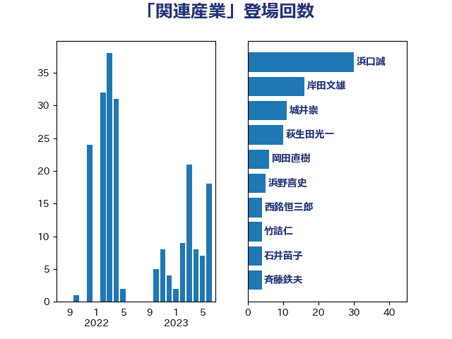

単語「関連産業」

| 浜口誠 | 国民民主党 | 30 回 |
| 岸田文雄 | 自由民主党 | 16 回 |
| 城井崇 | 立憲民主党 | 11 回 |
| 萩生田光一 | 自由民主党 | 10 回 |
| 岡田直樹 | 自由民主党 | 6 回 |
| 浜野喜史 | 国民民主党 | 5 回 |
| 西銘恒三郎 | 自由民主党 | 4 回 |
| 竹詰仁 | 国民民主党 | 4 回 |
| 石井苗子 | 日本維新の会 | 4 回 |
| 斉藤鉄夫 | 公明党 | 4 回 |
| 道下大樹 | 立憲民主党 | 3 回 |
| 田名部匡代 | 立憲民主党 | 3 回 |
| 小宮山泰子 | 立憲民主党 | 3 回 |
| 西村康稔 | 自由民主党 | 2 回 |
| 石垣のりこ | 立憲民主党 | 2 回 |
| 漆間譲司 | 日本維新の会 | 2 回 |
| 津島淳 | 自由民主党 | 2 回 |
| 山本剛正 | 日本維新の会 | 2 回 |
| 小里泰弘 | 自由民主党 | 2 回 |
| 加藤鮎子 | 自由民主党 | 2 回 |
| おおつき紅葉 | 立憲民主党 | 2 回 |
| 高橋光男 | 公明党 | 1 回 |
| 鈴木義弘 | 国民民主党 | 1 回 |
| 金城泰邦 | 公明党 | 1 回 |
| 野村哲郎 | 自由民主党 | 1 回 |
| 野中厚 | 自由民主党 | 1 回 |
| 遠藤良太 | 日本維新の会 | 1 回 |
| 輿水恵一 | 公明党 | 1 回 |
| 足立敏之 | 自由民主党 | 1 回 |
| 藤川政人 | 自由民主党 | 1 回 |
| 落合貴之 | 立憲民主党 | 1 回 |
| 船橋利実 | 自由民主党 | 1 回 |
| 神谷宗幣 | 参政党 | 1 回 |
| 礒崎哲史 | 国民民主党 | 1 回 |
| 石井拓 | 自由民主党 | 1 回 |
| 田村まみ | 国民民主党 | 1 回 |
| 片山さつき | 自由民主党 | 1 回 |
| 湯原俊二 | 立憲民主党 | 1 回 |
| 渡辺猛之 | 自由民主党 | 1 回 |
| 清水貴之 | 日本維新の会 | 1 回 |
| 浜田靖一 | 自由民主党 | 1 回 |
| 浅野哲 | 国民民主党 | 1 回 |
| 浅田均 | 日本維新の会 | 1 回 |
| 横山信一 | 公明党 | 1 回 |
| 東国幹 | 自由民主党 | 1 回 |
| 杉本和巳 | 日本維新の会 | 1 回 |
| 本田顕子 | 自由民主党 | 1 回 |
| 朝日健太郎 | 自由民主党 | 1 回 |
| 斎藤アレックス | 国民民主党 | 1 回 |
| 徳永エリ | 立憲民主党 | 1 回 |
| 後藤茂之 | 自由民主党 | 1 回 |
| 庄子賢一 | 公明党 | 1 回 |
| 岩本剛人 | 自由民主党 | 1 回 |
| 山際大志郎 | 自由民主党 | 1 回 |
| 山崎誠 | 立憲民主党 | 1 回 |
| 尾身朝子 | 自由民主党 | 1 回 |
| 尾崎正直 | 自由民主党 | 1 回 |
| 宮本周司 | 自由民主党 | 1 回 |
| 宗清皇一 | 自由民主党 | 1 回 |
| 大家敏志 | 自由民主党 | 1 回 |
| 北神圭朗 | 無所属 | 1 回 |
| 伊波洋一 | 無所属 | 1 回 |
| 中川郁子 | 自由民主党 | 1 回 |
| 中川宏昌 | 公明党 | 1 回 |
| 下野六太 | 公明党 | 1 回 |